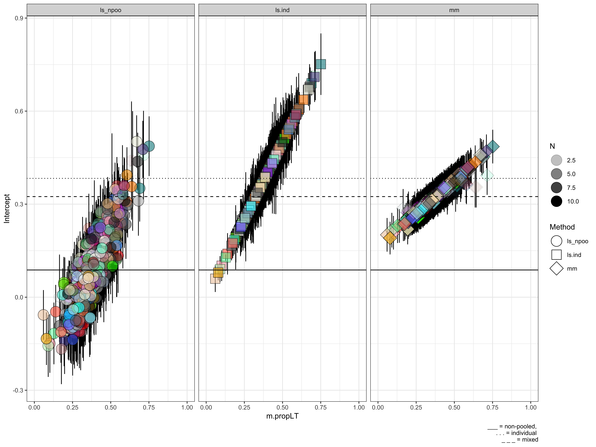
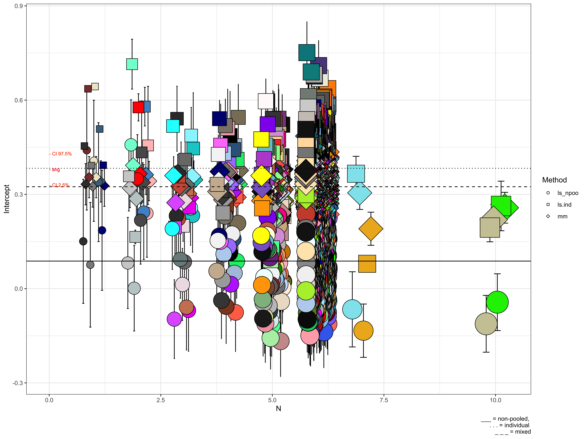
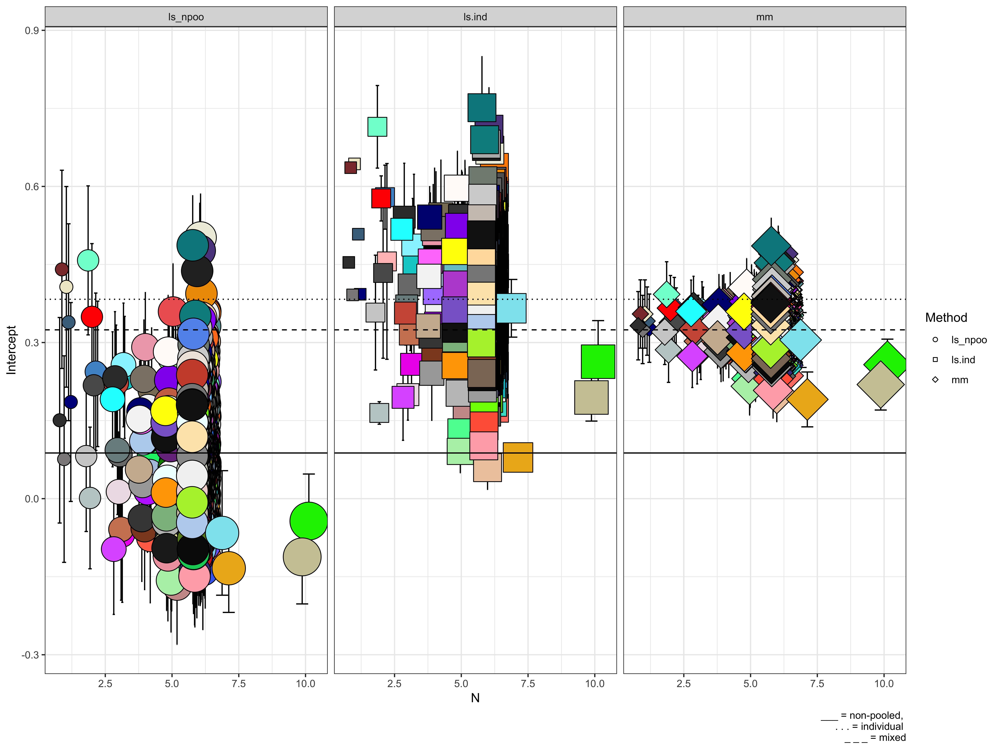

Here we present a comparison between the standard least-squared regression model and mixed modelling. When we want to obtain individual beta coefficients (1 for each individual), why should we do a mixed models - entering the individual as random effect), rather than 1) running a lsm with individual as a predictor 2) running a separate lsm for each subject?
We fit 3 linear regressions:
Non-pooled ordinary least squared regression (OLS) with the average proportional looking time (PLT) as the response variable. In order to obtain a score for each participant, we excluded the average intercept from the calculation.
Individual OLS with the average proportional looking time (PLT) as the response variable. Each regression included the individual participant’s data only.
Multilevel regression (also know as mixed model) with the average proportional looking time (PLT) as the response variable. The random effect specification allowed for correlated varying intercept and slopes per participant.
As an example, we are going to enter a continous variable, IQ, as unique predictor, and evaluate the change in the beta coefficient of the Intercept base on standard errors and N of observations. The beta coefficient represents the unstandardised effect size of each component; the standard error represents a measure of precision around the beta coefficient.
For each regression type, the beta coefficient and the standard errors correspond to:
Non-pooled OLS: the intercept corresponds to the individual estimate of the participant’s beta coefficient and its standard error. We obtained the individual estimate/error of the Intercept from the interaction between the time component and the participant level. In this case, the standard error corresponds to the square root of the sample variance, or mean squared error (MSE). The formula of the non-pooled OLS looks like: DV ~ IQ * Participant
Individual OLS: we obtained individual estimates and standard errors of intercept; we derived the degrees of freedom from actual number of observations per participant. In this case, the standard error refers to the individual variance MSE. The formula of the non-pooled OLS looks like: for i in total(Participants), DV(i) ~ IQ(i)
Multilevel model: we extracted the individual coefficients, corresponding to the sum of the fixed effect and the individual variance component (as specified in the random effect). In this case, we assumed as standard error the joint MSE of the summated variances of the fixed and the random effect. The formula of the non-pooled OLS looks like: DV ~ IQ + (1|Participant).
Sample ds:
## X ID group Stimulus prop_valid age.y schedule_adj
## 1 7506 491998749681 ASD static1 0.9990864 23.72329 Adults
## 2 7989 317719510819 TD static2 0.7051389 13.71233 Adolescents
## 3 10053 653262752197 ASD static5 0.7147841 13.28767 Adolescents
## 4 10524 494344414167 TD static6 0.9686047 20.36986 Adults
## 5 9905 449830790175 ASD static5 0.7887874 20.40000 Adults
## sex fsiq4_all SRS_tscore AOI prop.LT
## 1 Male 111.00000 74 head 0.4777621
## 2 Male 111.00000 NA head 0.4854953
## 3 Male 109.00000 87 head 0.1246805
## 4 Male 108.03571 NA head 0.1985937
## 5 Female 81.98971 66 head 0.6727388This is a standard regression that does not include individual estimates of beta:
mod_lm_poo<-lm(prop.LT~fsiq4_all,data=data_head)
summary(mod_lm_poo)##
## Call:
## lm(formula = prop.LT ~ fsiq4_all, data = data_head)
##
## Residuals:
## Min 1Q Median 3Q Max
## -0.38301 -0.15585 -0.00821 0.14268 0.60290
##
## Coefficients:
## Estimate Std. Error t value Pr(>|t|)
## (Intercept) 0.3232367 0.0179369 18.021 < 2e-16 ***
## fsiq4_all 0.0005693 0.0001734 3.282 0.00104 **
## ---
## Signif. codes: 0 '***' 0.001 '**' 0.01 '*' 0.05 '.' 0.1 ' ' 1
##
## Residual standard error: 0.1965 on 3587 degrees of freedom
## (31 observations deleted due to missingness)
## Multiple R-squared: 0.002995, Adjusted R-squared: 0.002717
## F-statistic: 10.77 on 1 and 3587 DF, p-value: 0.001039This standard regression does include individual estimates of beta because ID is entered as a preditor.
mod_lm_npoo<-lm(prop.LT~fsiq4_all+ID-1,data=data_head)
coef <- summary(mod_lm_npoo)$coefficients
coef.ls.npoo <- rbind(data.frame(ID=gsub(pattern="ID", replacement="",
x=rownames(coef[-1,])),
Intercept=coef[-1,1],
St.er.int=coef[-1,2],
Method="ls_npoo"))
rownames(coef.ls.npoo) <- NULL
head(as.data.frame(
summary(mod_lm_npoo)$coefficients) %>% tibble::rownames_to_column("id"))## id Estimate Std. Error t value Pr(>|t|)
## 1 fsiq4_all 0.002916958 0.0006554608 4.450240 8.894008e-06
## 2 ID100693509718 0.180076511 0.1054493580 1.707706 8.779572e-02
## 3 ID101129844643 0.190913976 0.1297673122 1.471202 1.413427e-01
## 4 ID101414625982 0.180949497 0.1005375034 1.799821 7.199069e-02
## 5 ID101900205031 0.190968718 0.0944966081 2.020906 4.337938e-02
## 6 ID104324981539 0.118926600 0.0984103914 1.208476 2.269607e-01Here we run a standard regression for each subject, thus obtaining a different estimate for each individual.
coef.ls.ind <- data.frame()
ids <- unique(data_head$ID)
for (i in 1:length(ids)) {
d.s = subset(data_head, ID==ids[i])
if (is.nan(mean(d.s$fsiq4_all, na.rm=T)))
{
coef.ls.ind = rbind(coef.ls.ind, data.frame(ID=(ids[i]),
Intercept=NA,
St.er.int=NA,
Method="ls.ind"))
}
else
{
ls.fit = lm(prop.LT~fsiq4_all, data=d.s)
s.ls.fit = summary(ls.fit)$coefficients
coef.ls.ind = rbind(coef.ls.ind, data.frame(ID=(ids[i]),
Intercept=s.ls.fit[1,1],
St.er.int=s.ls.fit[1,2],
Method="ls.ind"))
}
}
head(coef.ls.ind)## ID Intercept St.er.int Method
## 1 100693509718 0.5069321 0.08726203 ls.ind
## 2 101129844643 0.5176133 0.01931656 ls.ind
## 3 101414625982 0.4755623 0.06617047 ls.ind
## 4 101900205031 0.4428878 0.04011294 ls.ind
## 5 104324981539 0.3989546 0.05598306 ls.ind
## 6 109057020142 0.3317941 0.08336183 ls.indIn the mixed model, we specify a random effect that will group the observations of 1 participant together. When the lmm is fit, each participant will have his/her own estimate fit.
library(lmerTest)
library(sjstats)
mod_mm<-lmer(prop.LT~fsiq4_all+(1|ID),data=data_head)
coef <- coef(mod_mm)$ID$'(Intercept)'
err <- se(mod_mm)$ID$'(Intercept)'
coef.mm <- rbind(data.frame(ID=rownames(coef(mod_mm)$ID),
Intercept=coef,
St.er.int=err,
Method="mm"))
head(coef.mm)## ID Intercept St.er.int Method
## 1 100693509718 0.3756492 0.05425632 mm
## 2 101129844643 0.3599447 0.06011343 mm
## 3 101414625982 0.3648617 0.05425632 mm
## 4 101900205031 0.3543792 0.05425632 mm
## 5 104324981539 0.3332097 0.05425632 mm
## 6 107501679619 0.3596678 0.05597015 mmall_coef <- rbind(coef.ls.npoo, coef.ls.ind, coef.mm)gp_data <- data_head %>%
group_by(ID) %>%
# filter(ID=="100693509718" | ID=="101129844643") %>%
summarise(N=n(),
m.propLT=mean(prop.LT, na.rm=T),
sd.propLT=sd(prop.LT, na.rm=T)) %>%
mutate(Nmax=as.factor(ifelse(N<=3, 3,
ifelse(N>3 & N<=5, 5,
10)))) %>%
inner_join(all_coef)
sp_gp_data <- gp_data %>%
group_by(Method) %>%
summarise(N=n(),
m.propLT=mean(m.propLT, na.rm=T),
sd.propLT=sd(sd.propLT, na.rm=T),
m.int=mean(Intercept, na.rm=T))library(RColorBrewer)
set.seed(88)
n <- length(unique(data_head$ID))
n## [1] 634fill <- grDevices::colors()
fill1 <- sample(fill, n)In the below plots, we visualise the individual coefficients, corresponding to the sum of the fixed effect and the individual variance component (as specified in the random effect). The error bars represent the standard errors, calculated as the the joint MSE of the summated variances of the fixed, and the random effect for the mixed model.
These plots nicely illustrates how standard errors of the individual coefficients of the DV increases for participants with fewer observations. This is the core of the essential difference between standard regression and mixed models: thanks to the random effect, the mixed model is able to treat coefficients at the individual level, thus weighting them for their reliability (eg, standard error and sample size) when calculating the fixed betas.
In the first plot, we observe that the intercept estimated by the first two regressions is shifted to the more extreme values that, at the same time, are also the less reliable, as it is evident from plot 2 and 3. The estimate of the intercept instead is more centered because unreliable data points influence less the estimate of the fixed beta.
In this kind of scenario, it is highly advisable to use mixed modelling, to avoid over/down-estimating a crucial estimate in a regression. While this is a strong argument, the usual condition of “having lots of missing data” might not sound as strong!
library(ggplot2)
comp_m <- ggplot(data=(gp_data),
aes(x=m.propLT, y=Intercept,
fill=ID, shape=Method)) +
facet_grid(~Method) +
geom_errorbar(aes(x=m.propLT,
ymin=Intercept-St.er.int,
ymax=Intercept+St.er.int),
position=position_dodge(2),
color="black") +
geom_jitter(aes(alpha=N), size=7) +
scale_shape_manual(values = c(21,22,23)) +
scale_fill_manual(values=fill1) +
guides(fill = "none", size="none") +
xlim(0,1) +
# scale_size_continuous(range = c(5,15)) +
geom_hline(yintercept = sp_gp_data$m.int[1]) +
geom_hline(yintercept = sp_gp_data$m.int[2], linetype="dotted") +
geom_hline(yintercept = sp_gp_data$m.int[3], linetype="dashed") +
labs(caption="___ = non-pooled, \n . . . = individual \n _ _ _ = mixed") +
theme_bw()comp_m
# ggsave(filename = "method-com-m.pdf", plot = comp_m, height = 9, width = 12)comp_n1 <- ggplot(data=gp_data,
aes(x=N, y=Intercept,
fill=ID, shape=Method)) +
geom_errorbar(aes(ymin=Intercept-St.er.int,
ymax=Intercept+St.er.int),
position=position_dodge(0.5),
color="black") +
geom_point(aes(size=N), position=position_dodge(0.5)) +
scale_shape_manual(values = c(21,22,23)) +
scale_fill_manual(values=fill1) +
guides(fill = "none", size="none") +
scale_size_continuous(range = c(5,15)) +
geom_hline(yintercept = sp_gp_data$m.int[1]) +
geom_hline(yintercept = sp_gp_data$m.int[2], linetype="dotted") +
geom_hline(yintercept = sp_gp_data$m.int[3], linetype="dashed") +
labs(caption="___ = non-pooled, \n . . . = individual \n _ _ _ = mixed") +
geom_text(aes(x = 0, y = 0.38, label = "- avg"),
size=2.5, col="red", hjust = 0) +
geom_text(aes(x = 0, y = 0.38+0.05, label = "- CI 97.5%"),
size = 2.5, col="orangered", hjust = 0) +
geom_text(aes(x = 0, y = 0.38-0.05, label = "- CI 2.5%"),
size = 2.5, col="orangered", hjust = 0) +
theme_bw()comp_n1
# ggsave(filename = "method-com-n.pdf", plot = comp_n, height = 7, width = 11)comp_n2 <- ggplot(data=gp_data,
aes(x=N, y=Intercept,
fill=ID, shape=Method)) +
geom_errorbar(aes(ymin=Intercept-St.er.int,
ymax=Intercept+St.er.int),
position=position_dodge(0.5),
color="black") +
geom_point(aes(size=N), position=position_dodge(0.5)) +
scale_shape_manual(values = c(21,22,23)) +
scale_fill_manual(values=fill1) +
guides(fill = "none", size="none") +
scale_size_continuous(range = c(5,15)) +
geom_hline(yintercept = sp_gp_data$m.int[1]) +
geom_hline(yintercept = sp_gp_data$m.int[2], linetype="dotted") +
geom_hline(yintercept = sp_gp_data$m.int[3], linetype="dashed") +
labs(caption="___ = non-pooled, \n . . . = individual \n _ _ _ = mixed") +
theme_bw() +
facet_grid(~Method)comp_n2
# ggsave(filename = "method-com-n.pdf", plot = comp_n, height = 7, width = 11)